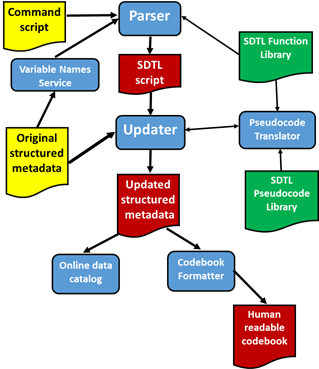

SDTL Use Cases¶
- Data production. A research organization fields a survey using computer assisted interview (CAI) technology. The CAI tools return a data file and a corresponding DDI metadata file that completely describes the survey instrument. After receiving the data, the research organization runs several long SPSS scripts to prepare the data for users. Many variables are dropped and recoded, and new variables are created by combining existing variables into indexes. The research organization uses the C2Metadata Workflow (see below) to produce DDI metadata corresponding to the revised data. Changes performed by the SPSS scripts are documented in SDTL. SDTL in the updated DDI metadata file links derived variables to the original variables from which they were computed. When the data are received by a data archive, the DDI is added to the online catalog and an interactive codebook.
- Replication data. A researcher downloads data files from public repositories with corresponding DDI metadata files. A Stata script merges the files and creates new variables combining variables from several files. The journal publishing an article based on the merged dataset requires authors to deposit the data, program code, and documentation explaining the code and the data. The researcher uses the C2Metadata Workflow to produce a codebook with natural language descriptions of steps involved in merging the data files and creating new variables.
- Program operation and variable provenance. A statistical service relies on legacy scripts written in the SAS language to produce public data products. When the government changes a reporting requirement in the tax code, the service is asked how the new rule will affect their data. No one currently working at the service understands SAS. Staff translate the SAS script into SDTL and create a provenance trace for each variable in the data product. The provenance traces identify which variables will be affected by the new rule, and they are used by staff to re-write the SAS scripts in Python.
The C2Metadata Workflow¶
The C2Metadata Project has created a suite of tools that form a complete workflow for creating SDTL and using SDTL to update DDI metadata files. Rather than relying on a single application, the C2Metadata workflow is modular, so that components designed for different source languages (SPSS, SAS, Stata, R, Python) and metadata standards (DDI, EML) can be combined. Figure 1 illustrates the C2Metadata workflow.
Figure 1. C2Metadata Workflow
The following objects are illustrated in Figure 1:
Source objects (yellow):
- Command script: A script in a supported language (SPSS, SAS, Stata, R, Python) used to transform the original data file
- Original structured metadata file: A metadata file in DDI or another standard describing the data file before the command script was executed
New objects (red)
- SDTL script: A file in SDTL JSON format translated from the Command script
- Updated structured metadata: A revised DDI file that corresponds to the data file after the Command script was executed, including SDTL provenance
- Human readable codebook: A codebook describing the revised data file
Applications (blue):
- Parser: An application that reads a Command script and translates it into an SDTL script
- Variable Names Service: An application that extracts a list of variable names from the DDI metadata file.
- Updater: An application that reads an Original structured metadata file and an SDTL script and creates an Updated structured metadata file
- Pseudocode Translator: An application that translates SDTL into natural language
- Online data catalog: The catalog of a data repository based on DDI or a similar standard
- Codebook formatter: An application that reads a metadata file (e.g. DDI) and produces documentation about the revised data file
Libraries (green):
- SDTL Function Library: A collection of schemas mapping functions in source languages to the corresponding function in SDTL
- SDTL Pseudocode Library: A set of templates for translating SDTL into natural language
The workflow begins with the Parser, which translates the Command script from its source language into SDTL. The C2Metadata Project has created parsers for five languages (SPSS, SAS, Stata, R, Python), and parsers for other languages (e.g. SQL) can be added. The Parser receives an ordered list of variable names in the data file from the Variable Names Service, which extracts them from the Original structured metadata file. The Parser inserts updated variable lists (SDTL type: DataframeDescription>variableInventory) into the SDTL script as needed. The Parser also accesses the Function Library for templates converting functions in the source language into the corresponding SDTL function. The output of the Parser is an SDTL script in JSON format.
The Updater uses the SDTL script created by the Parser to revise the Original structured metadata file. New variables created by the script are added, and transformations to pre-existing variables are described. The result is a history of all commands that affected the current state of each variable. The Updater also adds file-level metadata to reflect commands that drop variables and merge files. Translations of each command in natural language are also included in the revised metadata file. The Updater sends the SDTL script to the Pseudocode Translator, which uses templates in the Pseudocode Library to produce natural language descriptions of SDTL commands.
The Updated structured metadata created by the Updater retains all of the metadata from the Original structured metadata file. DDI metadata files can describe more than one data file, and we use that feature to provide versions of the data file both before and after the script was executed. This feature allows codebooks and other forms of documentation to hyper-link data transformation commands to variables that may have been dropped from the final data file. The Updater assigns a unique ID to every version of a variable in the DDI metadata file, so that other applications can trace all of the variables used in data transformation commands.
Updated structured metadata can be used in a variety of ways by data repositories and users. Figure 1 shows two common applications: data catalogs and codebooks derived from the DDI metadata file.
The tools described in Figure 1 are designed to work as APIs called by a web interface. In most cases the users interacting with a web interface will not be aware of the APIs that it invokes. Users may upload a DDI file and a command script to a web service and then download an SDTL script, updated DDI, a codebook, and possibly other outputs. SDTL APIs may also be accessed by other services, like metadata editors and statistical analysis packages.
Limitations of SDTL and the C2Metadata Workflow¶
- SDTL was designed for documentation not execution. SDTL was not intended to be complete and precise enough to control execution of a program to perform data transformations.
- SDTL currently focuses on data transformation commands, and it does not include schemas for analysis commands that create variables or data files. For example, researchers often save predicted values and residuals from regression models. Support for data derived from analysis commands could be added to SDTL in the future.
- SDTL currently does not support sorting of variables (columns). Statistical packages differ in the lexical ordering used to sort columns. A standard way of reporting sort orderings may be added in the future.
- The C2Metadata workflow is based entirely on metadata, and
it does not examine the data. This limitation prevents the
implementation of some data transformations and some DDI features at
this time.
- Reshape long to wide: Reshaping data in long format (e.g. children) into a wide format (e.g. mothers) involves creating a set of columns for each value of the index variable. Since the values of the index variables cannot be known without examining the data, reshaping from long to wide is not currently supported in C2Metadata language parsers. However, reshaping from wide to long is supported, and SDTL schemas can be used to describe long-to-wide commands.
- Descriptive statistics. C2Metadata language parsers do not produce descriptive statistics, because they work exclusively from metadata. Future software that reads the data as well as the metadata should include these features.